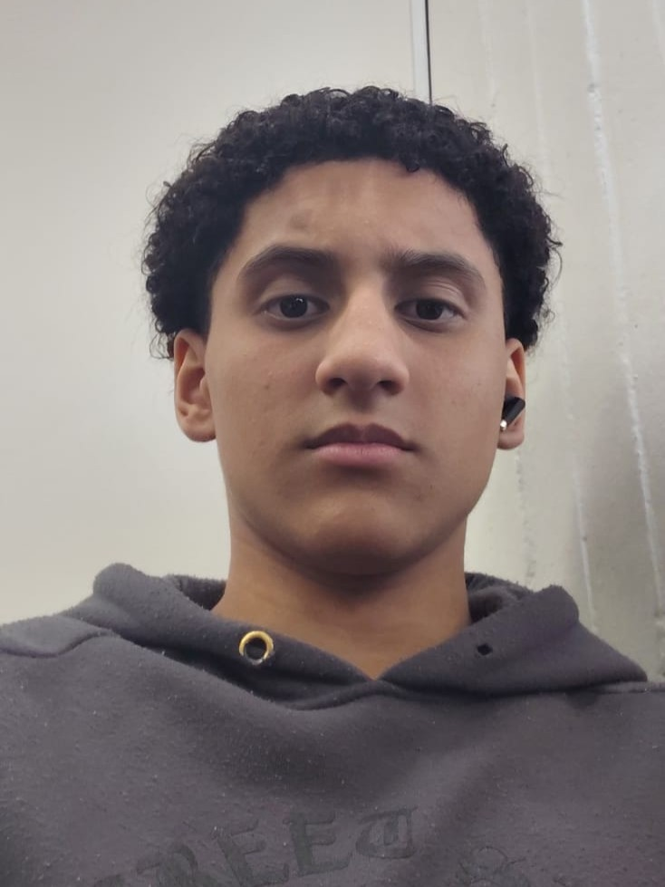

Sobre
Sou aluno do Senac de São Paulo.
Sou estudante de TI e atualmente estou desenvolvendo meus
conhecimentos e habilidades na área de tecnologia.
Estudo Informática para Internet, onde venho aprendendo
sobre desenvolvimento web, programação, lógica e criação
de sistemas.
Tenho interesse principalmente em desenvolvimento de
sistemas, programação, back-end e segurança da informação.
Tenho buscado aprender cada vez mais sobre lógica de
programação e entender melhor como funcionam as aplicações
e os sistemas que utilizamos no dia a dia.
Também tenho interesse em conhecer novas linguagens de
programação, ferramentas e tecnologias que possam
contribuir para minha formação e para meu futuro
profissional.
Durante meus estudos, gosto de colocar em prática aquilo
que aprendo, criando projetos, testando novas ideias e
procurando maneiras de melhorar minhas habilidades.
Acredito que errar e tentar novamente faz parte do
aprendizado, por isso procuro sempre buscar novas formas
de resolver os problemas e aprender com cada experiência.
Meu objetivo é continuar evoluindo, adquirir cada vez mais
conhecimento e experiência para futuramente conquistar
meu espaço no mercado de trabalho na área de tecnologia,
principalmente no desenvolvimento back-end.
Quero continuar estudando e me aperfeiçoando para poder
trabalhar com projetos maiores e transformar meus
conhecimentos em soluções úteis.
Nos meus momentos livres, gosto de jogar, escutar músicas,
cozinhar e passar um tempo fazendo coisas que gosto.
Também gosto de aprender coisas novas e explorar
diferentes assuntos relacionados à tecnologia.
Pretendo continuar construindo minha experiência aos
poucos, sempre buscando evoluir tanto profissionalmente
quanto nos meus conhecimentos pessoais.

Formação
Informática para Internet
Senac São Paulo
Em andamento
Formação voltada ao desenvolvimento web, lógica de programação, criação de sistemas e desenvolvimento de aplicações para internet.
Pilha
Ferramentas quais eu uso
Html Css JavaScript Python Git GitHub FigmaProjetos
Meus Projetos
Certificações